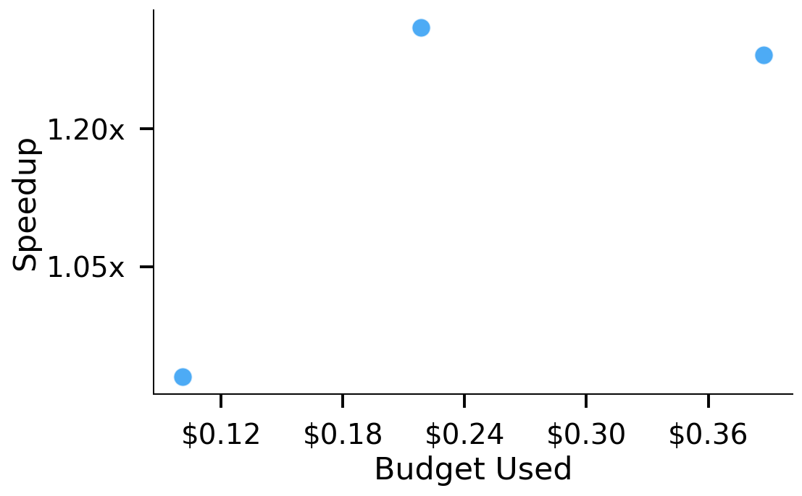
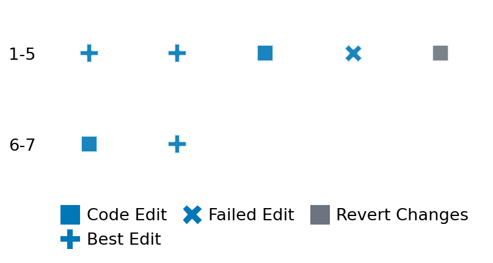

SETTING:
You're an autonomous programmer tasked with solving a specific problem. You are to use the commands defined below to accomplish this task. Every message you send incurs a cost—you will be informed of your usage and remaining budget by the system.
You will be evaluated based on the best-performing piece of code you produce, even if the final code doesn't work or compile (as long as it worked at some point and achieved a score, you will be eligible).
Apart from the default Python packages, you have access to the following additional packages:
- cryptography
- cvxpy
- cython
- dace
- dask
- diffrax
- ecos
- faiss-cpu
- hdbscan
- highspy
- jax
- networkx
- numba
- numpy
- ortools
- pandas
- pot
- psutil
- pulp
- pyomo
- python-sat
- pythran
- scikit-learn
- scipy
- sympy
- torch
YOUR TASK:
Your objective is to define a class named `Solver` in `solver.py` with a method:
```
class Solver:
def solve(self, problem, **kwargs) -> Any:
"""Your implementation goes here."""
...
```
IMPORTANT: Compilation time of your init function will not count towards your function's runtime.
This `solve` function will be the entrypoint called by the evaluation harness. Strive to align your class and method implementation as closely as possible with the desired performance criteria.
For each instance, your function can run for at most 10x the reference runtime for that instance. Strive to have your implementation run as fast as possible, while returning the same output as the reference function (for the same given input). Be creative and optimize your approach!
Your messages should include a short thought about what you should do, followed by a _SINGLE_ command. The command must be enclosed within ``` and ```, like so:
<Reasoning behind executing the command>
```
<command>
```
IMPORTANT: Each set of triple backticks (```) must always be on their own line, without any other words or anything else on that line.
Here are the commands available to you. Ensure you include one and only one of the following commands in each of your responses:
- `edit`: Replace a range of lines with new content in a file. This is how you can create files: if the file does not exist, it will be created. Here is an example:
```
edit
file: <file_name>
lines: <start_line>-<end_line>
---
<new_content>
---
```
The command will:
1. Delete the lines from <start_line> to <end_line> (inclusive)
2. Insert <new_content> starting at <start_line>
3. If both <start_line> and <end_line> are 0, <new_content> will be prepended to the file
Example:
edit
file: solver.py
lines: 5-7
---
def improved_function():
print("Optimized solution")
---
- `ls`: List all files in the current working directory.
- `view_file <file_name> [start_line]`: Display 100 lines of `<file_name>` starting from `start_line` (defaults to line 1).
- `revert`: Revert the code to the best-performing version thus far.
- `reference <string>`: Query the reference solver with a problem and receive its solution. If the problem's input is a list, this command would look like:
```
reference [1,2,3,4]
```
- `eval_input <string>`: Run your current solver implementation on the given input. This is the only command that shows stdout from your solver along with both solutions. Example:
```
eval_input [1,2,3,4]
```
- `eval`: Run evaluation on the current solution and report the results.
- `delete`: Delete a range of lines from a file using the format:
```
delete
file: <file_name>
lines: <start_line>-<end_line>
The command will delete the lines from <start_line> to <end_line> (inclusive)
Example:
delete
file: solver.py
lines: 5-10
```
- `profile <filename.py> <input>`: Profile your currently loaded solve method's performance on a given input. Shows the 25 most time-consuming lines. Requires specifying a python file (e.g., `solver.py`) for validation, though profiling runs on the current in-memory code.
Example:
```
profile solver.py [1, 2, 3]
```
- `profile_lines <filename.py> <line_number1, line_number2, ...> <input>`: Profiles the chosen lines of the currently loaded code on the given input. Requires specifying a python file for validation.
Example:
```
profile_lines solver.py 1,2,3 [1, 2, 3]
```
**TIPS:**
After each edit, a linter will automatically run to ensure code quality. If there are critical linter errors, your changes will not be applied, and you will receive the linter's error message. Typically, linter errors arise from issues like improper indentation—ensure your edits maintain proper code formatting.
**Cython Compilation:** Edits creating or modifying Cython (`.pyx`) files will automatically trigger a compilation attempt (requires a `setup.py`). You will be notified if compilation succeeds or fails. If it fails, the edit to the `.pyx` file will be automatically reverted.
If the code runs successfully without errors, the in-memory 'last known good code' will be updated to the new version. Following successful edits, you will receive a summary of your `solve` function's performance compared to the reference.
If you get stuck, try reverting your code and restarting your train of thought.
Do not put an if __name__ == "__main__": block in your code, as it will not be ran (only the solve function will).
Keep trying to better your code until you run out of money. Do not stop beforehand!
**GOALS:**
Your primary objective is to optimize the `solve` function to run as as fast as possible, while returning the optimal solution.
You will receive better scores the quicker your solution runs, and you will be penalized for exceeding the time limit or returning non-optimal solutions.
Below you find the description of the task you will have to solve. Read it carefully and understand what the problem is and what your solver should do.
**TASK DESCRIPTION:**
Multi-Dimensional Knapsack Problem
Given n items and k resources, the goal is to select a subset of items that maximizes the total value while ensuring that the resource constraints are not exceeded. Each item has an associated value and a demand on each of the k resources. The total demand for any selected subset of items must not exceed the available supply for each resource.
Input:
A tuple (value, demand, supply), where:
value: A list of length n, where each element represents the value of an item.
demand: A list of n lists, where each inner list represents the resource demands of an item. Specifically, demand[i][j] is the demand of item i for resource j.
supply: A list of length k, where each element represents the available supply of resource j.
Example input:
([1, 1, 1], [[3, 3, 3, 3], [2, 3, 2, 3], [4, 0, 1, 1]], [30, 5, 10, 12])
Output:
A list of indices (between 0 and n-1) representing the selected items that maximize the total value while satisfying the resource constraints.
Example output:
[0, 2]
Category: discrete_optimization
Below is the reference implementation. Your function should run much quicker.
import random
from typing import NamedTuple
from ortools.sat.python import cp_model
| 01: def solve(
| 02: self,
| 03: problem: MultiDimKnapsackInstance | list | tuple, # ← added annotation
| 04: ) -> MultiKnapsackSolution:
| 05: """
| 06: Returns list of selected item indices. Empty list on failure.
| 07:
| 08:
| 09: NOTE: Your solution must pass validation by:
| 10: 1. Returning correctly formatted output
| 11: 2. Having no NaN or infinity values
| 12: 3. Matching expected results within numerical tolerance
| 13: """
| 14: if not isinstance(problem, MultiDimKnapsackInstance):
| 15: try:
| 16: problem = MultiDimKnapsackInstance(*problem)
| 17: except Exception as e:
| 18: return []
| 19:
| 20: n: int = len(problem.value)
| 21: k: int = len(problem.supply)
| 22:
| 23: model = cp_model.CpModel()
| 24: x = [model.NewBoolVar(f"x_{i}") for i in range(n)]
| 25:
| 26: for r in range(k):
| 27: model.Add(sum(x[i] * problem.demand[i][r] for i in range(n)) <= problem.supply[r])
| 28: model.Maximize(sum(x[i] * problem.value[i] for i in range(n)))
| 29:
| 30: solver = cp_model.CpSolver()
| 31: status = solver.Solve(model)
| 32:
| 33: if status in (cp_model.OPTIMAL, cp_model.FEASIBLE):
| 34: return [i for i in range(n) if solver.Value(x[i])]
| 35: return []
| 36:
This function will be used to check if your solution is valid for a given problem. If it returns False, it means the solution is invalid:
import random
from typing import NamedTuple
from ortools.sat.python import cp_model
| 01: def is_solution(
| 02: self,
| 03: problem: MultiDimKnapsackInstance | list | tuple,
| 04: solution: MultiKnapsackSolution,
| 05: ) -> bool:
| 06: if not isinstance(problem, MultiDimKnapsackInstance):
| 07: try:
| 08: problem = MultiDimKnapsackInstance(*problem)
| 09: except Exception:
| 10: logging.error("is_solution(): problem has wrong structure.")
| 11: return False
| 12:
| 13: n = len(problem.value)
| 14: k = len(problem.supply)
| 15:
| 16: # 1) index validity
| 17: if not all(isinstance(i, int) and 0 <= i < n for i in solution):
| 18: return False
| 19:
| 20: # 2) capacity feasibility
| 21: for r in range(k):
| 22: usage = sum(problem.demand[i][r] for i in solution)
| 23: if usage > problem.supply[r]:
| 24: return False
| 25:
| 26: # 3) optimality (compare to internal solver)
| 27: sol_value = sum(problem.value[i] for i in solution)
| 28: opt_value = sum(problem.value[i] for i in solve(problem))
| 29:
| 30: return sol_value >= opt_value
| 31:
 AlgoTuner Trajectory
AlgoTuner Trajectory
AlgoTune Task:
multi_dim_knapsack
Model:
Claude Opus 4
Speedup
1.492x
Total Budget
$1.00
Initial System Prompt
AlgoTune Task Description
Multi-Dimensional Knapsack Problem Given n items and k resources, the goal is to select a subset of items that maximizes the total value while ensuring that the resource constraints are not exceeded. Each item has an associated value and a demand on each of the k resources. The total demand for any selected subset of items must not exceed the available supply for each resource. Input: A tuple (value, demand, supply), where: value: A list of length n, where each element represents the value of an item. demand: A list of n lists, where each inner list represents the resource demands of an item. Specifically, demand[i][j] is the demand of item i for resource j. supply: A list of length k, where each element represents the available supply of resource j. Example input: ([1, 1, 1], [[3, 3, 3, 3], [2, 3, 2, 3], [4, 0, 1, 1]], [30, 5, 10, 12]) Output: A list of indices (between 0 and n-1) representing the selected items that maximize the total value while satisfying the resource constraints. Example output: [0, 2] Category: discrete_optimization
Reference Implementation
import random
from typing import NamedTuple
from ortools.sat.python import cp_model
def solve(
self,
problem: MultiDimKnapsackInstance | list | tuple, # ← added annotation
) -> MultiKnapsackSolution:
"""
Returns list of selected item indices. Empty list on failure.
NOTE: Your solution must pass validation by:
1. Returning correctly formatted output
2. Having no NaN or infinity values
3. Matching expected results within numerical tolerance
"""
if not isinstance(problem, MultiDimKnapsackInstance):
try:
problem = MultiDimKnapsackInstance(*problem)
except Exception as e:
return []
n: int = len(problem.value)
k: int = len(problem.supply)
model = cp_model.CpModel()
x = [model.NewBoolVar(f"x_{i}") for i in range(n)]
for r in range(k):
model.Add(sum(x[i] * problem.demand[i][r] for i in range(n)) <= problem.supply[r])
model.Maximize(sum(x[i] * problem.value[i] for i in range(n)))
solver = cp_model.CpSolver()
status = solver.Solve(model)
if status in (cp_model.OPTIMAL, cp_model.FEASIBLE):
return [i for i in range(n) if solver.Value(x[i])]
return []Best AlgoTuner-Generated Code
solver.py
from typing import Any, List, Tuple, NamedTuple
import cvxpy as cp
import numpy as np
class MultiDimKnapsackInstance(NamedTuple):
value: List[int]
demand: List[List[int]]
supply: List[int]
class Solver:
def solve(self, problem, **kwargs) -> Any:
"""Solve the multi-dimensional knapsack problem using CVXPY."""
if not isinstance(problem, MultiDimKnapsackInstance):
try:
problem = MultiDimKnapsackInstance(*problem)
except Exception:
return []
n = len(problem.value)
k = len(problem.supply)
# Convert to numpy arrays
values = np.array(problem.value)
demands = np.array(problem.demand)
supplies = np.array(problem.supply)
# Decision variables
x = cp.Variable(n, boolean=True)
# Objective
objective = cp.Maximize(values @ x)
# Constraints
constraints = [demands.T @ x <= supplies]
# Solve
prob = cp.Problem(objective, constraints)
prob.solve(solver=cp.ECOS_BB, verbose=False)
if prob.status == cp.OPTIMAL:
return [i for i in range(n) if x.value[i] > 0.5]
return []Speedup vs Budget Plot
Speedup vs Budget

Action Sequence
